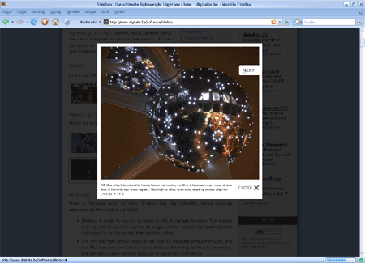

- Orhan Ekici "Nedir bu seo?" adlı güzel bir makale yazmış.
Bağlantı
- Yahoo Medya player ile sitenize görüntü/ses oynatıcı gömebilirsiniz. Bağlantı
- VS.NET 2008 yenilikleri. Bağlantı
- CSS düzeltme olmadan kullanmak. Bağlantı
- 50 güzel favori ikonu. Bağlantı
- CSS3'ün 3 yeni özelliği(birden fazla zemin resmi, saydamlık ve boyutlandırabilme). Bağlantı
- Alta ...
CSS İpuçları 14 - IE div yüksekliği sorunu
our_style { height: 1px; width: 100px; background-color: black; }
HTML kodu;
<div class="test"></div>
Bu kod Firefox'da sorunsuz çalışmasına karşın IE'de yükseklik 10px görünecektir. Bir bakıma IE boş içeriğin yüksekliğini 10px kabul ediyor, ancak bu bizim işimizi bozuyor. Çözüm ise çok basit.
devamını oku.test { font-size: 0; height: 1px; width:100px ...
Lightbox seçimi
Lightbox; popup veya mesaj kutusu benzeri, sayfa içinde açılan kutulara denir. Bu kutular sayfadaki diğer öğelerin üzerine kapsayacak şekilde tüm sayfayı belli oranda saydamlık verilerek kaplayan kutulardır. Lightbox sayfalarımıza estetik görsellik kazandırır.

Bir çok lightbox uygulaması mevcuttur. Ben bu lightbox uygulamalarından bazılarını denedim ve çeşitli sitelerde kullandım ve sonuçta birinde ...
devamını oku8 Ocak 2008 Web'den Seçme Haberler
- Ajax editörleri Bağlantı
- GWT semineri görüntüleri. Bağlantı
- Resim yerine swf koyma metodu ile resimlere efekt vermek. Bağlantı
- css çıktı almada sayfa sonu ekleme. Bağlantı
- Google Docs sunu dosyalarını web sitemize ekleye biliyoruz artık. Bağlantı
- Thunderbird'e Outlook arşiv dosyalarını içe aktarmak için eklenti. Ben yapamadım yalnız. Bağlantı
- El yazısı stilli ...
4 Ocak 2008 Web'den Seçme Haberler
- YUI 2.4.0 çıkmış. Birçok yenilikler var. Bağlantı
- Photoshop icon üretme eklentisi. Bağlantı
- Fatih Turan'dan "Firefox 3′de CSS İçin İyileştirmeler" Bağlantı
- Erkut Ercan'dan "CSS 3.0 / Yeni Versiyonla Gelen Bazı Özelikler" Bağlantı
- Ogalican "Css İle Yatay İstatistik Kutusu" makalesini okuyun. Bağlantı
- HTML+ CSS sayflarından yüksek kaliteli ...
Ölüm Daha Güzeldi - Mehmet Niyazi
devamını oku Sovyet rusyası zamanında Azeri
soydaşlarımızı yapılanları anlatan güzel bir kitap aslında ruslar sadece
Azerilere değil tüm Türk Cumhuriyetlerine yaptığı zulüme örnek bir
roman. Ermeni soykırımını devamlı üzerimize kakan batı dünyasının
bunları görmemesi. Niyetlerini anlamamız için yeter. Sovyet rusya
yıkıldı. Tüm bu zulümler unutuldu. En azından bizim gördüğümüz. Ancak
bunlar yaşandı ...
Sovyet rusyası zamanında Azeri
soydaşlarımızı yapılanları anlatan güzel bir kitap aslında ruslar sadece
Azerilere değil tüm Türk Cumhuriyetlerine yaptığı zulüme örnek bir
roman. Ermeni soykırımını devamlı üzerimize kakan batı dünyasının
bunları görmemesi. Niyetlerini anlamamız için yeter. Sovyet rusya
yıkıldı. Tüm bu zulümler unutuldu. En azından bizim gördüğümüz. Ancak
bunlar yaşandı ...31 Aralık 2007 Web'den Seçme Haberler
26 Aralık
- "LINQ'nun diğer yüzü :)" Bağlantı
- Doğrulanmış CSS ile saydamlaştırma özelliği eklemek. Bilindiği gibi opacity özelliğinin farklı tarayıcılardaki kodu W3C validator'dan geçmiyor, CSS3 ile bu durum düzeltilmiş olsa bile, şimdilik burada anlatılan metot mantıklı. Bağlantı
- Eburhan'dan "Css ile hazırladığım mesaj kutuları" Bağlantı
- google chart api(grafik) hakkında ...
Petrol Fırtınası - Raif Karadağ
devamını oku Petrolün gerçek yüzünü gösteren
güzel bir kitap. Kitap her ne kadar 1950'lere kadar ki bir dönemi
anlatsa da gerisini tahmin etmek zor değil. Bazı şeyler sonuçsuz kalıyor
gibi görünse de aslında herşey apaçık ortada. Anlatılan olaylar
günümüzdede aynı yöntem ve şartlar ile devam etmekte. Kitabı okuduktan
sonra olaylara ve ...
Petrolün gerçek yüzünü gösteren
güzel bir kitap. Kitap her ne kadar 1950'lere kadar ki bir dönemi
anlatsa da gerisini tahmin etmek zor değil. Bazı şeyler sonuçsuz kalıyor
gibi görünse de aslında herşey apaçık ortada. Anlatılan olaylar
günümüzdede aynı yöntem ve şartlar ile devam etmekte. Kitabı okuduktan
sonra olaylara ve ...24 Aralık 2007 Web'den Seçme Haberler
- Nihayet e-posta sorununu hallettik. Yardımları için Ceyhun'a teşekkürler.
- Asp.net adapte edilmiş lightbox uygulaması. Bağlantı
- Ajaxian javascript kütüphane kullanımı için yaptığı anket sonuçlanmış. Bağlantı
- Microsoft IE8 ile birlikte CSS3 ün özelliklerinden grid desteği geleceğine dair haberler var. Bağlantı
- CSS kod yazım teknikleri. Bağlantı
- Basit bir şekilde CSS yapısı oluşturmak ...
18 Aralık 2007 Web'den Seçme Haberler
- Yaklaşık haftadır site üzerinden e-posta alamıyorum. Sorunun
araştırıyorum. En yakın zamanda çözerim inşallah. Bu nedenle bana
yazın kısmını pasif hale getiriyorum, bilginize.
- CSS hakkında genel bir bilgi veren güzel bir makale. Bağlantı
- Ajax tabanlı anında mesajlaşma servisi. Bağlantı
- WPF - .NET Framework 3.5 ile Gelen Yenilikler. Bağlantı
- Listivew ve akordeon ...
- Yaklaşık haftadır site üzerinden e-posta alamıyorum. Sorunun
araştırıyorum. En yakın zamanda çözerim inşallah. Bu nedenle bana
yazın kısmını pasif hale getiriyorum, bilginize.